Ngày nay, để đáp ứng nhu cầu của con người thì thị trường vật liệu xây dựng nội thất đang ngày càng phát triển, chúng trở nên phong phú, đa dạng về mẫu mã và chủng loại. Nếu bạn đang băn khoăn không biết lựa chọn vật liệu xây dựng nội thất cho công trình của mình, thì đừng bỏ qua bài viết dưới đây của chúng tôi. Hãy cùng khám phá các vật liệu xây dựng nội thất mới nhất hiện nay nhé!
VẬT LIỆU XÂY DỰNG NỘI THẤT
| Số thứ tự | Hạng mục | Vật liệu | Hình ảnh minh họa | Ứng dụng |
|---|---|---|---|---|
| 1 | Nhà ở | Gỗ công nghiệp | 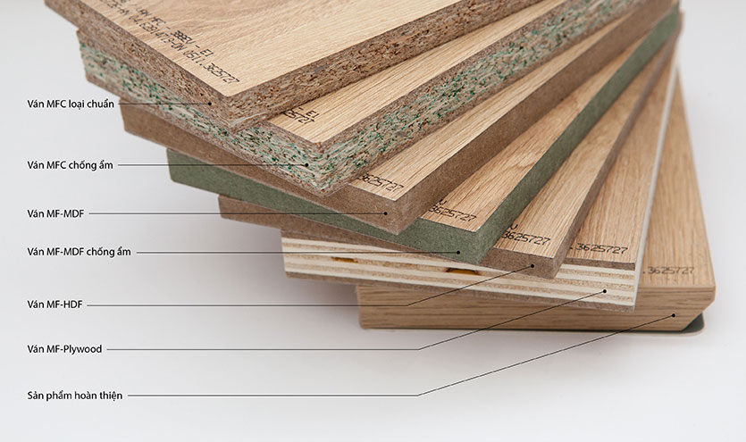 | Gỗ công nghiệp đa dạng kiểu vân, kiểu dáng và thường mang đến xu hướng thiết kế hiện đại, mới mẻ. |
| 2 | Nhà ở, Biệt thự | Gỗ thông | 
|
Gỗ thông là loại gỗ có nguồn gốc tự nhiên, chúng được đánh giá cao về công dụng làm đồ nội thất bởi sở hữu các đường vân gỗ rất đẹp và khá mềm mại. Không gian sử dụng gỗ thông sẽ giúp mang lại sự sang trọng, tinh tế, hiện đại. |
| 3 | Nhà ở, Biệt thự | Đá Marble | 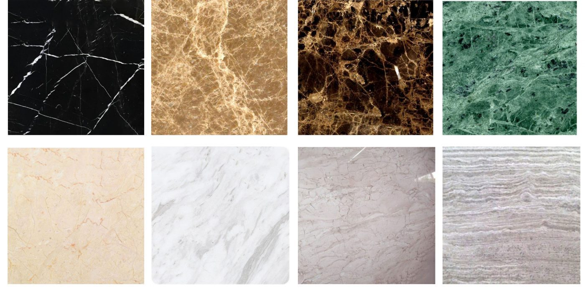 | Gạch ốp tường ngoài nhà. Gạch ốp tường ngoài nhà cần phải bền, chắc, và chịu được bất kỳ tác động nào của thời tiết. bề mặt gạch cứng chắc, lớp màu không bị bong tróc hoặc nhạt màu … |
| 4 | Nhà ở, Biệt thự | Đá nhân tạo | 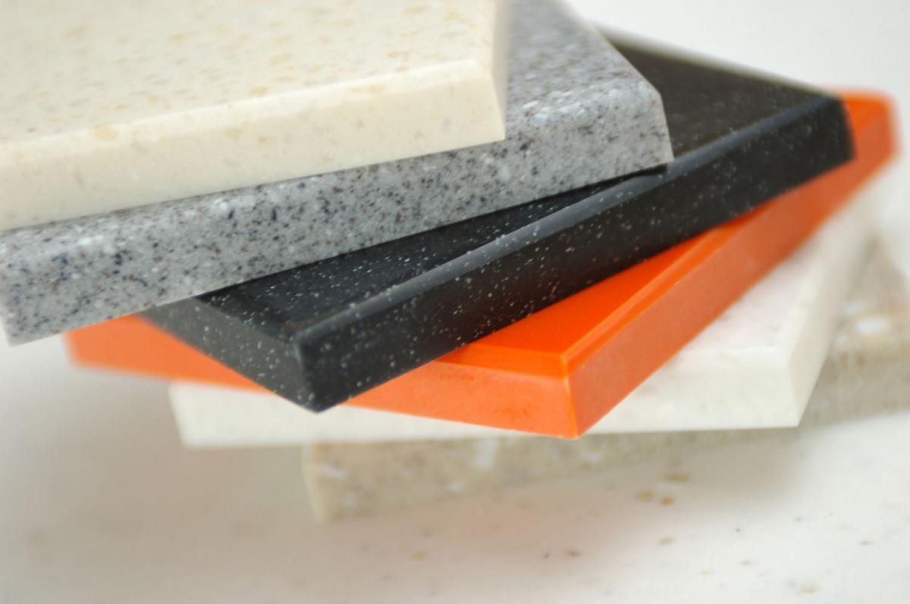 | Gạch ốp tường ngoài nhà. Gạch ốp tường ngoài nhà cần phải bền, chắc, và chịu được bất kỳ tác động nào của thời tiết. bề mặt gạch cứng chắc, lớp màu không bị bong tróc hoặc nhạt màu … |
| 5 | Nhà ở, Biệt thự | Kính | 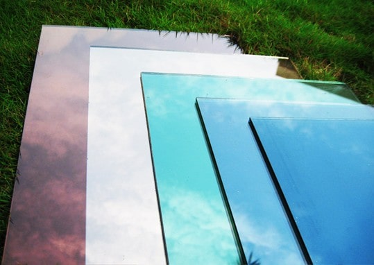 | Trong căn nhà, việc sử dụng kính để ngăn cách không gian sẽ giúp tạo cảm giác rộng rãi, thoáng mát giữa các phòng với nhau. |
Vật liệu xây dựng nội thất
1. Vật liệu nội thất là gì?
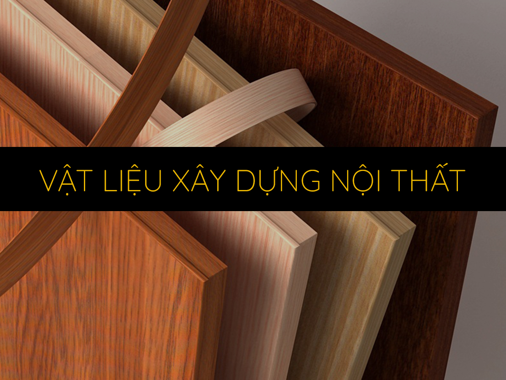
Vật liệu nội thất là những vật liệu được sử dụng rộng rãi để thi công trang trí, giúp tạo nên không gian nội thất thu hút và nổi bật hơn. Thực tế cho thấy vật liệu xây dựng nội thất nắm giữ vai trò quan trọng đối với không gian của ngôi nhà.
Hiện nay, những vật liệu này được cải tiến cả về chất lượng lẫn mẫu mã nhằm đáp ứng nhu cầu của con người.
2. Các loại vật liệu nội thất hiện nay:
2.1 Gỗ - Vật liệu trang trí nội thất lâu đời
Gỗ được xem là vật liệu tự nhiên và truyền thống được nhiều người ứng dụng trong thiết kế nhà ở. Bạn có thể bắt gặp các đồ vật được tạo nên từ gỗ như: cửa, tủ, bàn ghế,... Hai loại gỗ được ứng dụng nhiều trong sản xuất ra các loại dụng cụ, đồ dùng cho gia đình là gỗ thông và gỗ công nghiệp.
a. Gỗ công nghiệp
Đây là loại gỗ được sử dụng nhiều trong trang trí nội thất, phổ biến. Hiện nay gỗ công nghiệp đang nhận được sự quan tâm của nhiều người. Ưu điểm của gỗ công nghiệp là đa dạng kiểu vân, kiểu dáng và thường mang đến xu hướng thiết kế hiện đại, mới mẻ.
Tuy nhiên, so với những loại gỗ khác, gỗ công nghiệp có giới hạn tính năng do sự bong tróc sau thời gian dài sử dụng.
b. Gỗ thông
Gỗ thông là loại gỗ có nguồn gốc tự nhiên, chúng được đánh giá cao về công dụng làm đồ nội thất bởi sở hữu các đường vân gỗ rất đẹp và khá mềm mại. Không gian sử dụng gỗ thông sẽ giúp mang lại sự sang trọng, tinh tế, hiện đại. Bên cạnh đó, gỗ thông còn có mùi thơm đặc trưng, giúp cho các thành viên trong gia đình được thoải mái, thư giãn hơn bao giờ hết.
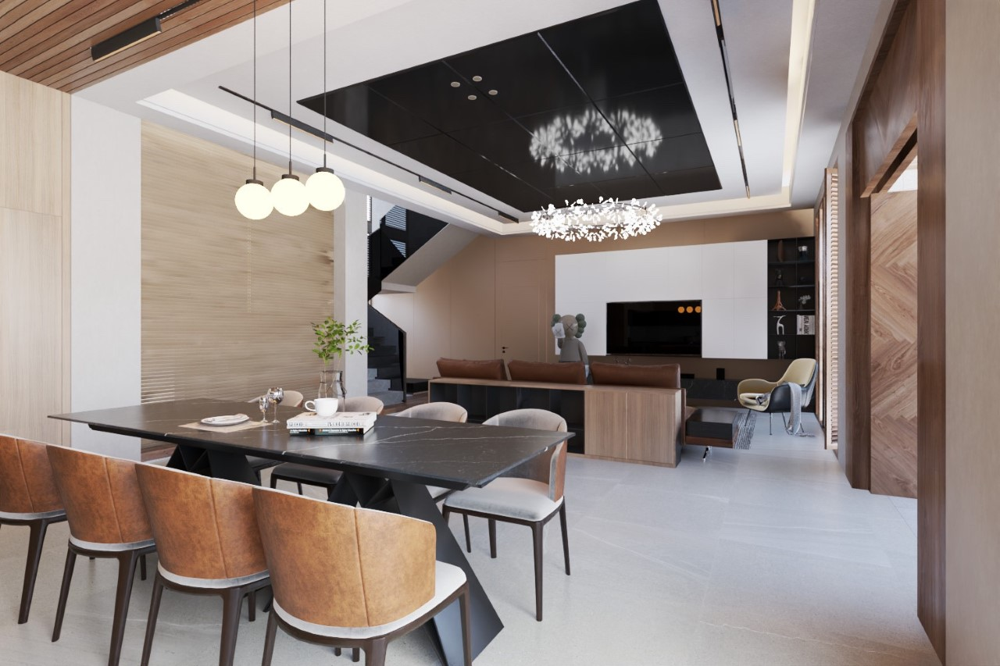
2.2 Đá tự nhiên - Vật liệu trang trí nội thất hiện đại
a. Đá Marble
Chúng còn được biết đến với cái tên là đá cẩm thạch, đây là loại vật liệu trang trí nội thất được nhiều người quan tâm trong thời gian gần đây. Nếu không gian của bạn sử dụng loại đá này sẽ giúp mang lại sự sang trọng, tinh tế và thoáng mát cho cả ngôi nhà.
Bên cạnh đó, đá Marble còn được nhiều người lựa chọn vì chúng sở hữu những đường vân mềm mại, giúp cho không gian trở nên cuốn hút và duy mĩ. Các không gian có thể sử dụng đá Marble là nhà bếp, nhà tắm hoặc ốp tường.
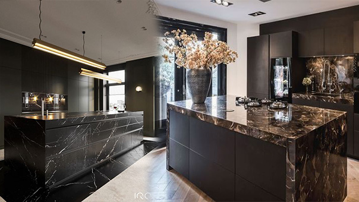
2.3 Đá nhân tạo - vật liệu trang trí nội thất mới
Những năm gần đây, đá nhân tạo đã trở thành xu hướng và được nhiều người yêu thích. Khác với đá Marble, đá nhân tạo hạn chế tối đa những nhược điểm của đá tự nhiên.
Một ưu điểm của đá nhân tạo là khả năng uốn cong mà hầu hết các sản phẩm đá khác không có. Kỹ sư xây dựng thường ứng dụng đá nhân tạo trong quá trình làm quầy bar, bàn bếp hoặc dùng để ốp tường nội - ngoại thất.
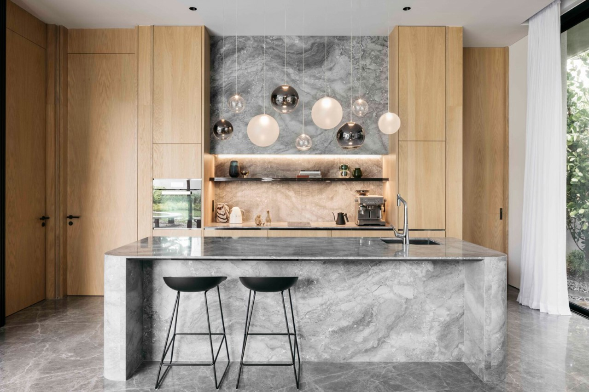
2.4 Sàn thảm
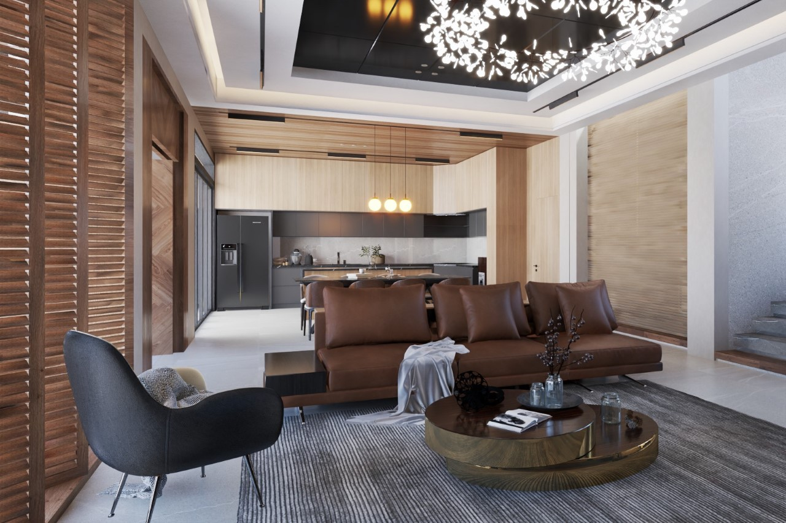
Sàn thảm đang là vật dụng được nhiều gia chủ lựa chọn để trang trí không gian nội thất của SYDO CORP, đặc biệt là phòng khách. Trong kiến trúc xây dựng, người ta thường sử dụng sàn thảm để tạo điểm nhấn cho không gian. Bạn có thể sử dụng sàn thảm ngay dưới bộ bàn ghế ở phòng khách. Với việc làm này sẽ giúp điểm tô cho căn phòng thêm lộng lẫy.
Bạn cần lựa chọn sàn thảm phù hợp với màu sắc của không gian và style yêu thích để giúp mang lại sự hài hoà, thể hiện sự tinh tế của ngôi nhà
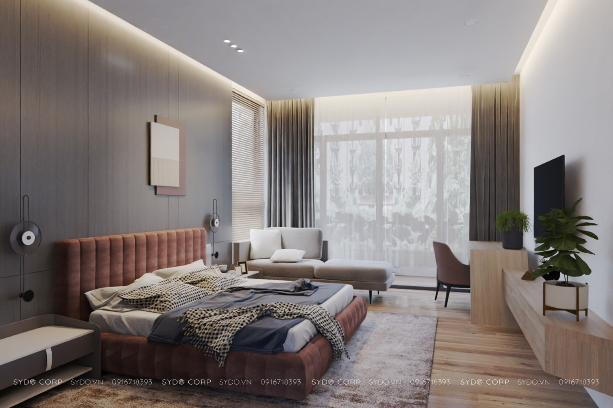
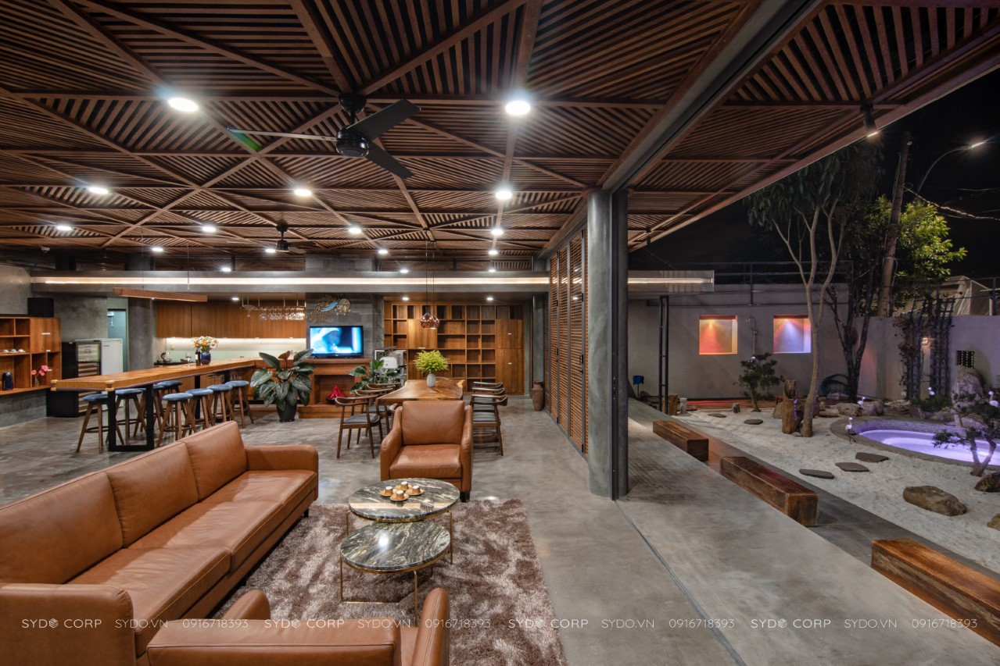
2.5 Kính
Nhắc đến vật liệu trang trí trang trí nội thất, thì không thể bỏ qua kính - đây là loại vật liệu xây dựng nội thất cuối cùng mà SYDO CORP muốn giới thiệu đến bạn. Kính là loại vật liệu trang trí nội thất được sử dụng ngày càng rộng rãi và phổ biến trong các thiết kế và hầu hết phong cách hay xu hướng kiến trúc nào. Trong căn nhà, việc sử dụng kính để ngăn cách không gian sẽ giúp tạo cảm giác rộng rãi, thoáng mát giữa các phòng với nhau.
Hiện nay trên thị trường có rất nhiều loại kính đáp ứng nhu cầu và sở thích của đông đảo khách hàng. Có thể kể đến các loại kính như: điêu khắc họa tiết trên gương, kính mờ hay kính màu,...ngoài ra, kính cường lực là loại được nhiều nhà thiết kế lựa chọn làm vật liệu trang trí nội thất phòng khách, nhà tắm,.. Đây là loại kính có khả năng chịu lực tốt, khả năng cách âm, chống ẩm ướt, chống thấm nước và đảm bảo an toàn trong suốt quá trình sử dụng.

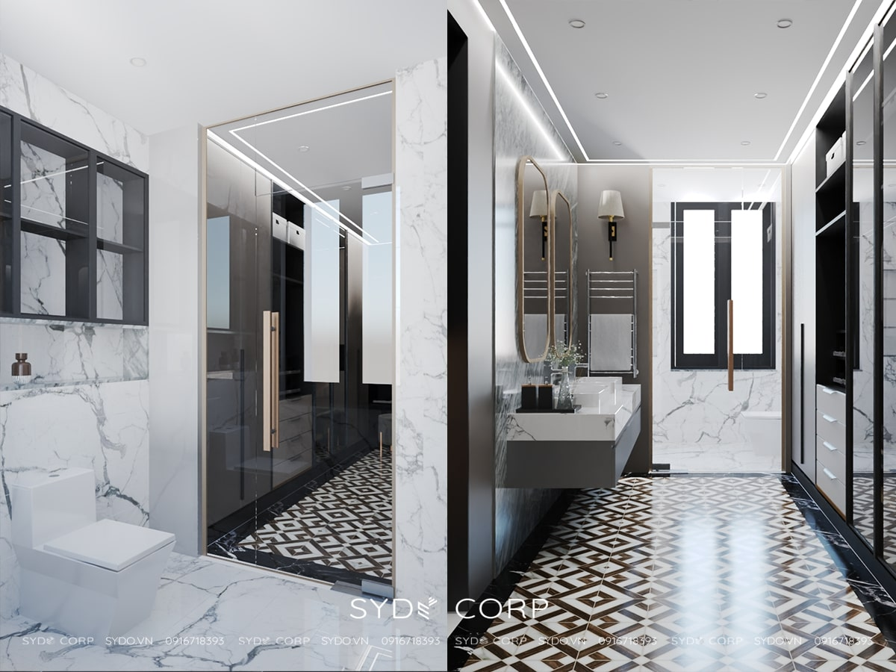
Trên đây là một số loại vật liệu phổ biến dùng trong trang trí nội thất hiện đại. SYDO CORP hy vọng bài viết sẽ cho bạn cái nhìn tổng quan về vật liệu nội thất là gì, đặc điểm và phân loại để dễ dàng chọn lựa chính xác. Nếu bạn còn điều gì băn khoăn về vật liệu nội thất, hãy liên hệ với chúng tôi hoặc bất kể đơn vị xây dựng trọn gói nào gần nhất để được hỗ trợ nhé!
𝗦𝗬𝗗𝗢 𝗖𝗢𝗥𝗣 – Nền tảng của sự đổi mới
Công Ty TNHH Kiến Trúc Xây Dựng SYDO
𝗛𝗼𝘁𝗹𝗶𝗻𝗲: 08 678 15109 (SĐT có dùng zalo)
𝗢𝗳𝗳𝗶𝗰𝗲: 50/12 Đường 19, Hiệp Bình Chánh, TP. Thủ Đức, HCM
𝗪𝗲𝗯𝘀𝗶𝘁𝗲: https://sydo.vn/
𝗘𝗺𝗮𝗶𝗹: sydocorp@gmail.com